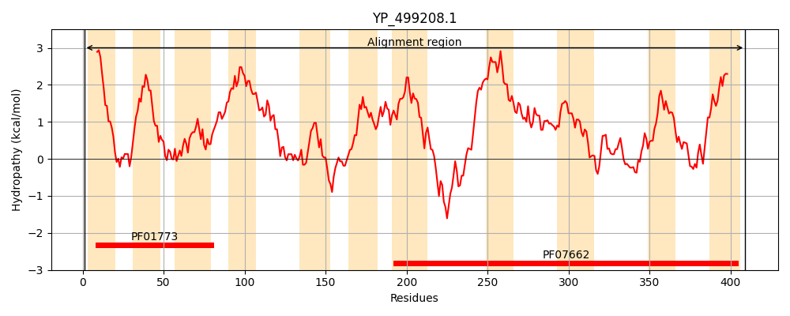
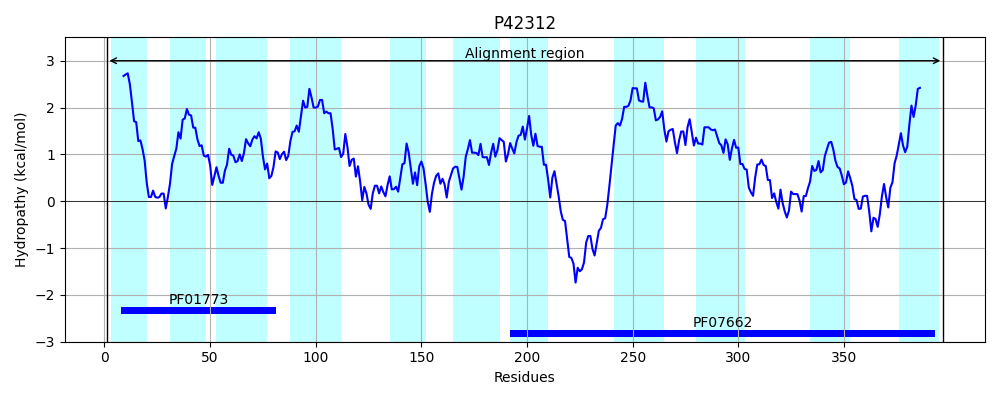
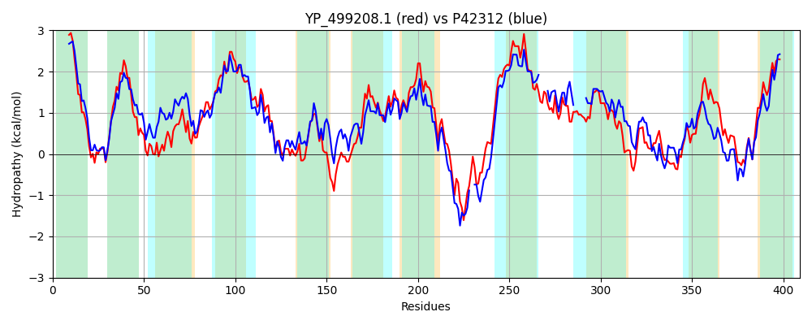

Hit Accession: P42312
Hit TCID: 2.A.41.1.3
Hit Description: gnl|BL_ORD_ID|10457 gnl|TC-DB|P42312|2.A.41.1.3 Hypothetical transport protein yxjA - Bacillus subtilis.
Mach Len: 409
e:0.000000
Query TMS Count : 11
Hit TMS Count: 11
TMS-Overlap Score: 8.600000
Predicted Substrates:CHEBI:8639;7H-purine
BLAST Alignment:
Score: 882 , Bit scores: 344 bits, E-value: 3.1e-116, Alignment length: 409, Percentage identity: 46
Query: 1 MFLLINIIGLIVFLGIAVLFSRDRKNIQWQSIGILVVLNLFLAWFFIYFDWGQKAVRGAANGIAWVVQSAHAGTGFAFASLTNVKMMDMAVAALFPILLIVPLFDILMYFNILPKIIGGIGWLLAKVTRQPKFESFFGIEMMFLGNTEALAVSSEQLKRMNEMRVLTIAMMSMSSVSGAIVGAYVQMVPGELVLTAIPLNIVNAIIVSCLLNPVSVEEKEDIIYSLKNNEVERQPFFSFLGDSVLAAGKLVLIIIAFVISFVALADLFDRFINLITGLIAGWIGIKGSFGLNQILGVFMYPFALLLGLPYDEAWLVAQQMAKKIVTNEFVVMGEISKDIASYTPHHRAVITTFLISFANFSTIGMIIGTLKGIVDKKTSDFVSKYVPMMLLSGILVSLLTAAFVGLFAW 409
M+ L+N++GLIV + + L S +K I+W+ I L+VL L + WF + G A+ + W++ A G FAF S+ + +D +AL PI+ IV FDIL YF ILP +I IGW+++K +R PK ESFF I+MMFLGNTEALAV +QL ++ R+LT +MSMSS+SG+I+G+Y+ MVP V TAIPLN +NA+I++ LLNPV V E EDIIY+ E++ FFS + +S+L +V++I+A VI +VAL +N I G+ + I+ I PFA LLGLP +A VAQ M K+ TNEFV M ++ ++ S PH AV TTFL SFANFST+GMI GT I+D + S + + V +L+SGI VSLL+AA VGLF W
Sbjct: 1 MYFLLNLVGLIVIMAVVFLCSPQKKKIKWRPIITLIVLELLITWFMLGTKVGSWAIGKIGDFFTWLIACASDGIAFAFPSVMANETVDFFFSALLPIIFIVTFFDILTYFGILPWLIDKIGWVISKASRLPKLESFFSIQMMFLGNTEALAVIRQQLTVLSNNRLLTFGLMSMSSISGSIIGSYLSMVPATYVFTAIPLNCLNALIIANLLNPVHVPEDEDIIYTPPKE--EKKDFFSTISNSMLVGMNMVIVILAMVIGYVALTSA----VNGILGVFVHGLTIQ------TIFAYLFSPFAFLLGLPVHDAMYVAQLMGMKLATNEFVAMLDLKNNLKSLPPHTVAVATTFLTSFANFSTVGMIYGTYNSILDGEKSTVIGRNVWKLLVSGIAVSLLSAAIVGLFVW 397 | Protein Hydropathy Plots: |
|---|
|  |  |
Pairwise Alignment-Hydropathy Plot:
|
|---|
|  |